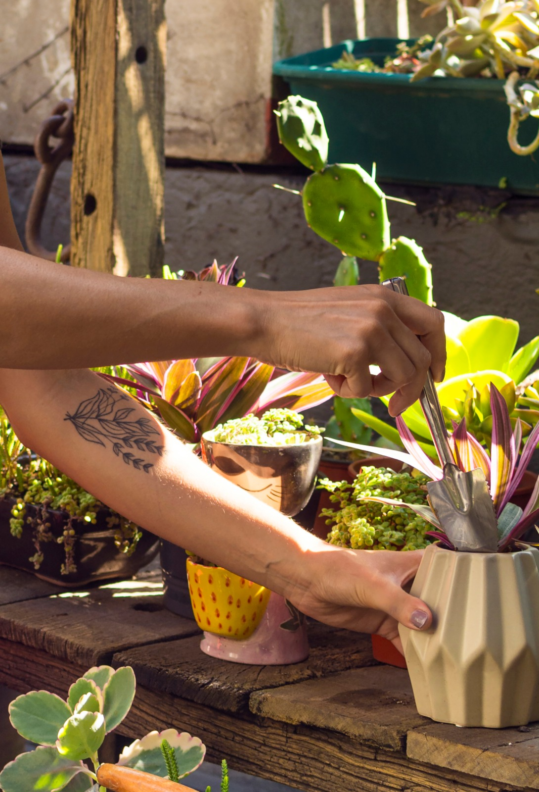
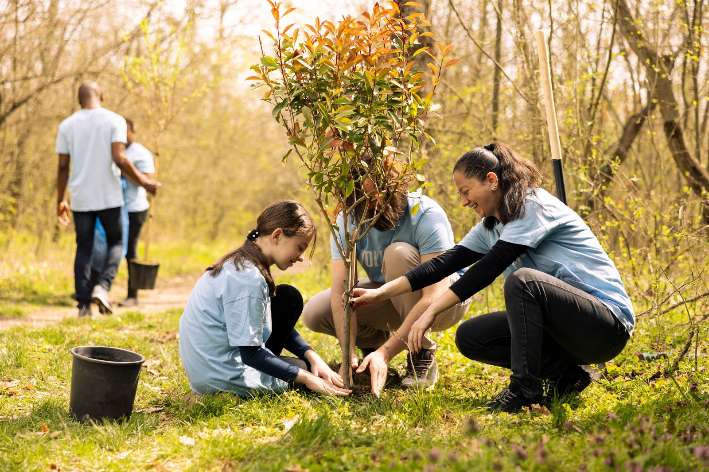
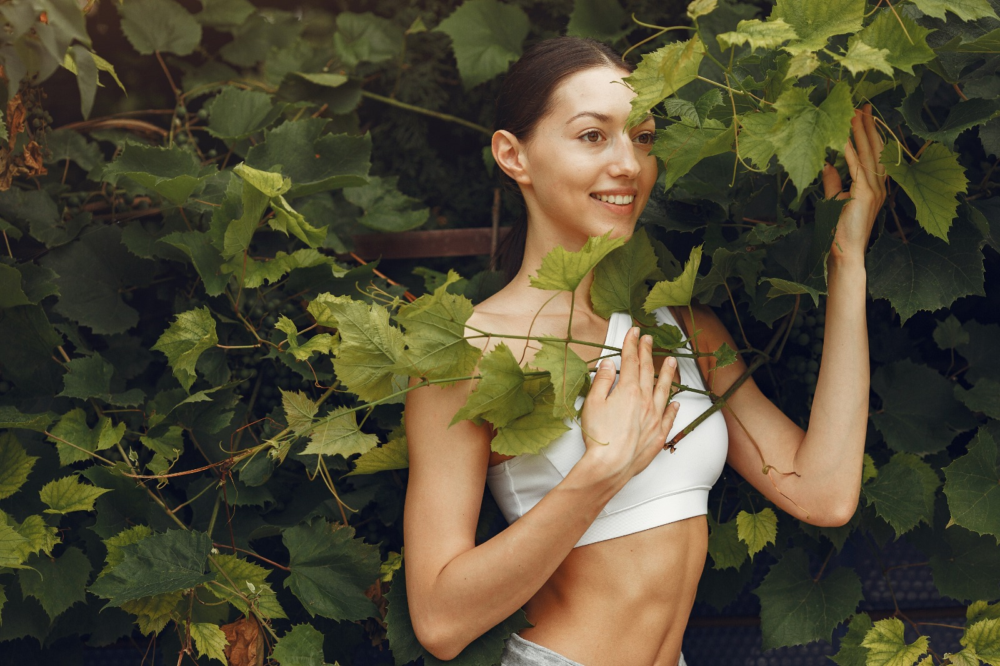
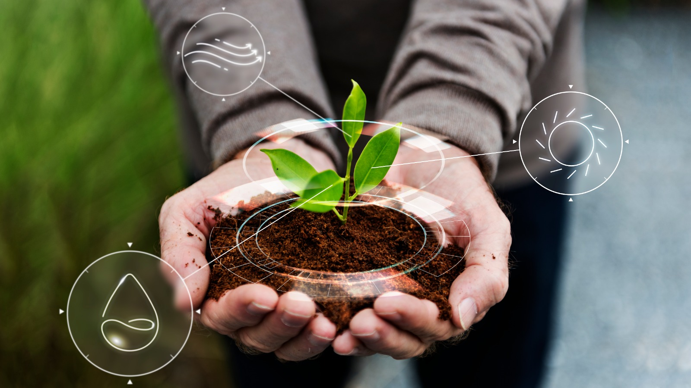

Guia de Jardinagem Sustentável
Aprenda como plantar espécies nativas, cuidar do solo e transformar seu espaço em um ambiente mais verde e equilibrado.
- 🌳 Como escolher plantas nativas
- 💧 Rega correta e economia de água
- 🌱 Cuidados com o solo


Espécies da Mata Atlântica ajudam a refrescar o clima urbano, aumentam a biodiversidade e tornam as cidades mais sustentáveis.
Levamos o verde para mais perto das pessoas. Nossos serviços unem educação, sustentabilidade e bem-estar para criar ambientes mais saudáveis, bonitos e conectados com a natureza.

Desenvolvemos projetos educativos que incentivam o cuidado com a natureza e o cultivo de plantas. Nosso objetivo é conscientizar pessoas e comunidades sobre a importância da preservação ambiental.

Criamos iniciativas que levam mais áreas verdes para ambientes urbanos, mostrando que pequenas mudanças podem transformar cidades em lugares mais sustentáveis e agradáveis.

Ambientes com plantas trazem mais vida, conforto e qualidade de vida. Ajudamos você a criar espaços naturais que promovem tranquilidade e bem-estar no dia a dia.

Nossa consultoria ajuda empresas e comunidades a adotarem práticas mais sustentáveis no dia a dia. Trabalhamos lado a lado com nossos clientes para encontrar soluções que preservem o meio ambiente e tragam benefícios para a sociedade.
Fale com um especialistaVocê conhece mesmo a Mata Atlântica? descubra curiosidades sobre cuidar da sua planta
Aprenda como plantar espécies nativas, cuidar do solo e transformar seu espaço em um ambiente mais verde e equilibrado.